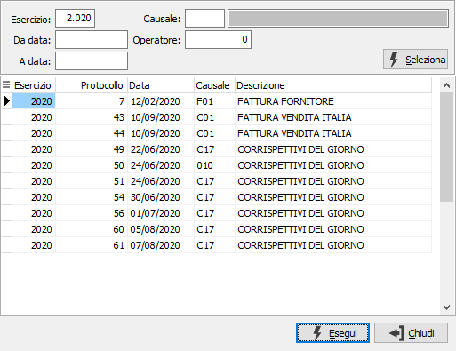
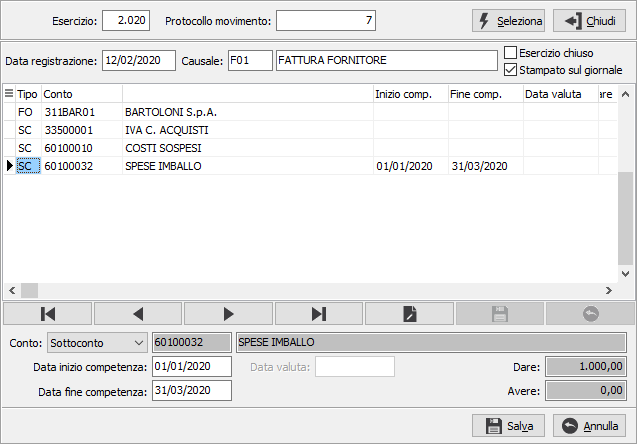

Manutenzione dati movimenti contabili
La procedura consente di selezionare un movimento contabile stampato sul giornale o appartenente ad un esercizio chiuso, relativo ad una causale che richieda un periodo di competenza oppure ad un conto che richieda una data valuta; altri tipi di movimenti non saranno selezionabili.
Il movimento viene richiamato tramite esercizio e protocollo, sul campo esercizio è presente una ricerca che consente di ricercare i movimenti per esercizio, periodo di registrazione e causale; i movimenti selezionati in ricerca risentono già dei criteri di selezione generali della procedura; per il movimento selezionato vengono mostrati la data di registrazione, la causale e l'indicazione se si tratta di un esercizio chiuso e stampato sul giornale.

In relazione al tipo di movimento sarà possibile modificare, sulle singole righe, le date di competenza e/o la data valuta; al salvataggio sarà aggiornato il movimento contabile e se presente un collegamento con la contabilità analitica saranno modificati anche i movimenti collegati se il periodo di competenza era uguale a quello presente sul movimento contabile; per le righe su cui non sono richieste le suddette informazioni non sarà consentita nessuna modifica.
